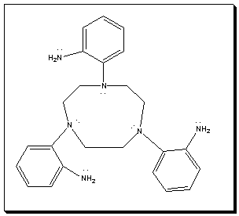

|
More Information on the
[(1,4,7-tris(2-aminophenyl)1,4,7-triazacyclononane)Cu(II)]2+ Ion
The [(1,4,7-tris(2-aminophenyl)1,4,7-triazacyclononane)Cu(II)]2+ ion (with multiple bonds)
is shown on the left. The ligand contains three bidentate subunits tethered together to yield a single hexadentate ligand. The ligand is neutral and binds to the Cu(II) ion through lone pairs on each N atom. The overall charge on the complex is therefore +2.

Reference for this structure: I.A.Fallis, R.D.Farley, K.M.A. Malik, D.M. Murphy, H. J. Smith, J. Chem Soc., Dalton Trans., 2000, p. 32632
|